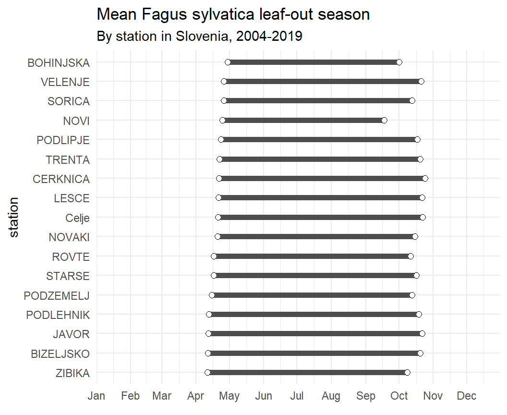

Stream Discharge
Follow the same descriptions as in the reading for obtaining (just) stream discharge data for the Bois Brule and Bad Rivers in northern Wisconsin (see map below) for all of 2020.

Combine these data into one data frame and compute mean discharge by month for each river. Rearrange the resultant data frame so that the monthly results for both rivers are in side-by-side columns. Show your full code and results and comment on any observations that you can make from your summaries.
Phenology of Slovenian Trees
zust et al. (2021) recorded the first date that leaves were found (called start of season) and the last date that leaves were found for various deciduous trees at specific locations (they called them “stations”) in Slovenia over several years. The data are recorded in Phenology Slovenia 2004-2019.xlsx.
Load these data into R and perform the following wranglings to “clean” the data.
- Change names to standardized formats (note that “SOS” means “start of season” and “EOS” means “end of season”).
- Eliminate the “station code” variable.
- Convert dates from character format to date format.
- Find the length of the “season” (in days) for each observation (i.e., time between the start and end of the season).
- Create a year variable.
- Create variables that represent the day of the year (i.e., days since 1-Jan) for both the start and end of the season.
- Select only observations for the Fagus sylvatica species (i.e., European Beech).
- Change the station name variable to a factor with the location levels ordered from earliest to latest mean seasons starting date. [Hint: Note that there are missing values in the date variables.]
Summarize the cleaned data to find the mean day of the year that the season starts and ends and the mean length of the season for Fagus sylvatica at each station.
Numerical day of the year (day since 1-Jan) is useful for calculations (above you computed the mean day of the year for the start and end dates of the leaf-out season), but it is not as useful for graphing (e.g., readers don’t immediately know when day 175 is). A day of the year can be converted to a date with as_date() from lubridate. By default the date will be created in 1970, which will not be an issue here because we want to find the mean date within any given year. Thus, create two new variables using as_date() that will have the mean start and end to the season for each station as an actual date, rather than day of the year. [Hint: Add the variables to the summary data frame from the previous questions. Also note that as_date() was not described in the reading but it is easy to use … just give it a day-of-the-year value.]
An example plot for the modified data is shown below.
